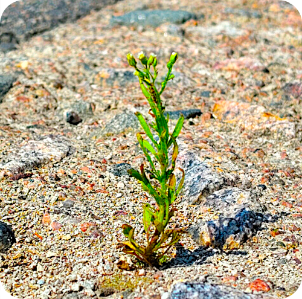

Nordic Basic Scientific Computing 2027
What is NoBSC?
Registration
Registration will open later, and will likely be priced around 100-150 EUR.
We aim to have two types of registration:
Professional registration which fully covers the cost of attending and allows you to organize satellite sessions in our rooms before/after the meeting. If your employer pays for your attendance, we recommend selecting this option.
Independent registration, which is partially subsidized, but otherwise equivalent.
Both registration types include break food and meals as listed on the schedule. Our (organizer’s) time is limited, so our goal is to make it easy by ordering all meals and catering, which is unfortunately not cheap. NoBSC is a new, independently organized event and registration fees are set at the bare minimum to make this possible.
Practical info
Location
Dipoli building, Aalto University Campus, (Espoo), Helsinki Area. If
you search Dipoli in a map service it should find it, the address
is Otakaari 24, 02150 Espoo.
The main room is “Palaver” and there should be signs pointing you that direction (it’s also exactly marked on the map below). If you arrive for lunch you can find us on the 2nd floor Metso restaurant (not the Reima student restaurant that is next to it).
FAQ
Questions from attendees will be placed here for your reference:
.
.
.
Food
The registration fee includes lunch (days 1,2,3) and coffee breaks during each half-of-the-day. They can cater to any common diet.
Otherwise, there are various restaurants on campus. These restaurants can generally cater to all common diets, including vegetarian, vegan, gluten free, and lactose free. There are also two grocery stores at the metro station (A entrance).
Map
Tourist information and other activities
Wikivoyage Helsinki is usually pretty accurate and has information about the area and other sights to see.
Hotels
There are various hotels within easy walking distance. We don’t have any particular discounts. “Radison Blu Otaniemi” is the default location for university visitors. Other hotels in Helsinki downtown are fine also, the metro trip is 11 minutes (and costs ~3 euros).
Arrival
tldr: Aalto University is at the “Aalto University” metro stop. An “ABC” ticket manages the train from airport AND metro (and trams, busses, etc).
Air: Helsinki Airport. Between the airport and Aalto University, plan for max 1.5 hours (less than one hour is possible if you are efficient). From the airport, follow signs to the train station. Board a train and immediately use a contactless payment card to buy an ABC ticket at a card reader; this will get you all the way to the university (see public transport). Take the first train that comes (either way gets to downtown in about the same time). From the main station, walk to the connected metro station. Take a metro to the stop Aalto University (direction Tapiola or Kivenlahti), then continue in section “public transport” below.
Ferry: From Tallinn or Stockholm, there are ferries. Expect well under an hour to get from the ferry harbors to Aalto University. Take trams to the metro, but from each harbor walking to the metro is reasonable (not too far and nice walks). (Some attendees are also attending the Nordic e-infrastructure Conference in Tallinn on 27-29 May, they will be taking ferries from Tallinn the evening of 29 May. More info to be announced)
Bus, Train, etc. within Finland: You probably know how to get to the center of Helsinki. Follow public transit below.
Private vehicle: There isn’t free parking, but there are paid lots around.
Public transport: The public transport system is good and easy to use. The metro stop name is “Aalto University”, and the A exit is closer to us. Tickets can be bought at ticket machines, or via the “HSL App”. Aalto University is in the zone B, downtown is in the zone A, the airport in zone C, and tickets last a bit more than an hour and work on any public bus, train, metro, or tram (and as many transfers as you need). AB zone tickets cost about 3€.
If coming from airport: use single tickets, day tickets not worth it even with one extra trip to/from downtown.
Now, all tickets can be bought using contactless payment cards (details). Select the appropriate zones (AB or ABC) at the blue readers (before getting on the metro, after boarding bus/train/tram), then show your card. More info and ways to pay.
Code of conduct
Attendees are expected to follow the Aalto University code of conduct. Realisically you won’t read it, so here the general idea :
There will be attendees at a wide variety of points in their RSE/SciComp career. Try to understand them and help them go.
There will be attendees who know more or fewer other attendees. Take active steps to include them in your conversations:
Leave spaces in your circle for others to join, if you see someone hovering, invite them in and fill them in on what you are talking about.
Give special attention to understanding who is in your discussion groups and making sure you are talking at the right level.
This is a bottom-up event to support your networking. Please help out if see something to improve and you have time and ability.
Tell Richard or Samantha if you need something.
About
Organizers
Richard Darst, Aalto University (co-lead)
The organizers welcome others to take part in planning, either in short or long term. We communicate via the CodeRefinery chat, #NoBSC-org channel. This is the same place that Nordic-RSE people hang out.
Supported by
Aalto Scientific Computing (Science-IT): Staff time
TBD
History of NoBSC
You could say this event was first inspired when Richard Darst went to the Nordic e-Infrastructure Collaboration conference in 2017. This event had a variety of infrastructure and open science people not advertising why their stuff was so good, but discussion how to make things better. (At least that’s what it looks like with rose-colored glasses looking back.) This also kicked off the collaboration between ASC and CodeRefinery (a NeIC project dedicated to teaching basic software tools for researchers), which continues to this day.
CodeRefinery didn’t feel like a collaboration not between organizations, but between the people in the trenches directly helping or users. This was an extremely productive collaboration, not just in the main teaching but in connecting people together to talk about their other jobs besides teaching.
In 2019, we had a meeting it Helsinki called Nordic HPC, basically a lot of the CodeRefinery staff who were supporters of smaller university-based computing clusters. We enjoyed talking and sharing ideas, but soon we became closer together because we were all working online, and our collaboration was focused on online events.
In February 2026, we met again in person - some of the same people, many different people. While it was ad-hoc and had no budget, it got the job of “meeting each other” done. The attendees wanted to continue, and we currently plan to repeat the event in 2027.
Past logos

This plant represents the growth of a new organization out of a harsh world. This was taken outside one organizer’s home, there was apparently not even a crack in the concrete at this location. Photo saturation increased to make the plant visible.
Sponsorship
NoBSC is being organized by a few people without institutional backing. If you are interested in sponsoring the event, it will go a long way to making it possible.
Why sponsor? NoBSC is not a big event focused on fancy graphics and advertisements, nor an academic event where people are focused on their own work. This is a time to meet the day-to-day infrastructure people, who are supporting the broad research community, and ensure they know what you want them to know.
Contact us about possibilities, but sponsorship would include at least some free registrations, a keynote talk, and access to all talks and hallway discussions (including the possibility to propose your own unconference sessions/workshops).
Schedule
The exact schedule will be announced later. The basic outline is below, but the sessions may be adjusted.
Facilities
There is one main room for up to 50-80 people, and three other rooms of various sizes for breakout sessions (34-60, 16, 30). These are suitable for anything from small meetings to workshops with laptops.
Schedule outline
Note: A CSC ambassadors meeting is the Tuesday before and can easily be combined with NoBSC.
10 Feb (Wed) |
11 Feb (Thu) |
12 Feb (Fri) |
(possibility for satellite sessions) Arrival by lunch time (space for networking before then). |
SciComp user panel Unconference sessions (up to 4 parallel sessions) |
Morning session Closing |
12:00 Lunch (included) |
12:00 Lunch (included) |
12:00 Lunch (included) |
Introduction “Cool things and problems” Keynote Pre-submitted talks Other icebreakers |
Unconference session (up to four parallel sessions) |
Ends after lunch (possibility for satellite sessions) |
Pre-planned or invited sessions
Cool things and problems
Our icebreaker of the workshop, and starting point for sharing ideas. Everyone (hopefully grouped into teams from their organization) can present one slide of three cool things they have done lately, and one slide of three problems they are facing lately. We will quickly go through these and use the talk as a starting point for discussion - maybe a few unconference talks can be requested from it.
The session will be built from a shared editable slide deck. Attendees will get contribution instructions (+ more details) closer to the event.
User panel
Panel discussions are usually full of the most senior people the organizers can find. In this discussion, we’ll hear from junior researchers, about how usable they find computing systems and the onboarding process. In past years, this has given a very useful look at what our typical users actually struggle with.
Unconference sessions
An unconference is the idea that sessions are planned by attendees even during the session. See Unconference for more.
How I see user support
A talk from an Aalto RSE about their unique ways of looking at user support - collaborative, not authoritative.
Unconference
A large part of this meeting is organized as an “unconference <https://en.wikipedia.org/wiki/Unconference>__”, with sessions
decided more dynamically by participants than usual rather than being
pre-selected by a program committee. Think of it as an official
“hallways track”. This makes more emphasis on discussions, rather
than flashy abstracts and slides.
Attendees will be able to suggest talks during the meeting, and there will be sessions where we organize these proposals into available time slots. Some advance submissions may also be scheduled as “unconference” sessions (so, without a pre-planned time, but guaranted time at some point).
Sessions that can be proposed or requested on the spot during the event, via a whiteboard or large sticky notes. Maybe you’ll invite someone to run a session inspired by an informal coffee conversation, or you’ll discover that several attendees are curious to hear more about something you’re working on. The unconference time is meant exactly for those spontaneous, interest-driven sessions.
History shows that we’ll find at least some time for everything someone wants to present. The main question is how long to take (lighting, talk, discussion, etc).
Call for contributions
The theme of this conference is how we actually work and “the problems we found along the way”, not “advertising our product”. You can present ideas, what you couldn’t do, things you need advice on, and so on.
We will accept advance submissions of all the normal types (talk, lightning talk, workshop) in addition to the unconference track, where sessions are proposed and scheduled during the meeting.
Contribution inspirations
- **You are allowed (and encourage) to come with a question instead of a
solution.**
Introduction to how my team/organization works.
Problem or concern I am facing now.
How my team solves some problem.
My thinking about some problem.
Cool procedure/practice/tool we have developed.
Cool software I have developed.
Book/video/event review and summary.
Demo or poster about something you would like to have input on.
Nordic Basic Scientific Computing is a gathering of those interested in supporting scientific computing (and a celebration of the diverse work that makes it all possible).
This event focuses on practical discussion and experience-sharing in the world of those on teams supporting computing, data, and software. It’s a time to roll up our sleeves, look under the hood and talk about what we really do each day (and not just advertise how good we are).
Preliminary info:
Aalto University campus, Helsinki [note: actually Otaniemi, Espoo, but I bet either you come from far enough away it doesn’t matter, or near enough you already know]
2027 February 10-12 (Wed-Fri), roughly “lunch to lunch”.
CSC Ambassador’s meet-up on the Tuesday before.
If you would like space for other satellite meetings on the morning before / afternoon after, let the organizers know. Our spaces are reserved.
For more info, see the 2026 edition